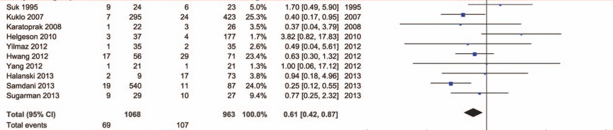

<?xml version="1.0" encoding="UTF-8"?>
<table xmlns="http://www.w3.org/1999/xhtml">
 <thead>
  <tr>
   <th>lines.svg</th>
   <th>../raw.body.png</th>
  </tr>
 </thead>
 <tbody>
  <tr>
   <td>
    <svg height="280.0" width="411.0" xmlns="http://www.w3.org/2000/svg">
     <g transform="matrix(1.0,0.0,0.0,1.0,0.0,0.0)">
      <g class="horizontallines">
       <line x1="210.0" y1="9.0" x2="342.0" y2="9.0" style="stroke:red;stroke-width:1.0;"/>
       <line x1="68.0" y1="49.0" x2="319.0" y2="49.0" style="stroke:red;stroke-width:2.0;"/>
       <line x1="236.0" y1="70.0" x2="401.0" y2="70.0" style="stroke:red;stroke-width:2.0;"/>
       <line x1="77.0" y1="90.0" x2="340.0" y2="90.0" style="stroke:red;stroke-width:2.0;"/>
       <line x1="95.0" y1="131.0" x2="399.0" y2="131.0" style="stroke:red;stroke-width:2.0;"/>
       <line x1="155.0" y1="152.0" x2="333.0" y2="152.0" style="stroke:red;stroke-width:2.0;"/>
       <line x1="174.0" y1="193.0" x2="292.0" y2="193.0" style="stroke:red;stroke-width:2.0;"/>
      </g>
      <g class="verticallines">
       <line x1="247.0" y1="0.0" x2="247.0" y2="270.0" style="stroke:blue;stroke-width:2.0;"/>
      </g>
     </g>
    </svg>
   </td>
  </tr>
  <tr>
   <td>
    
   </td>
  </tr>
 </tbody>
</table>
